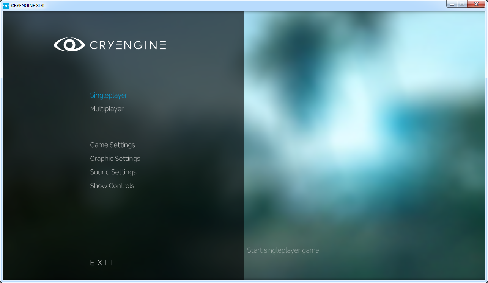
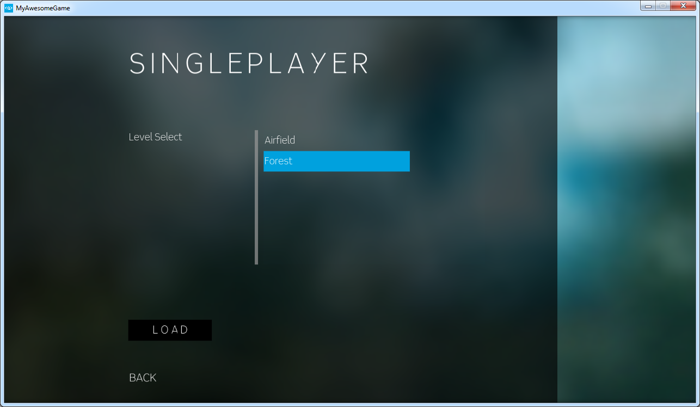
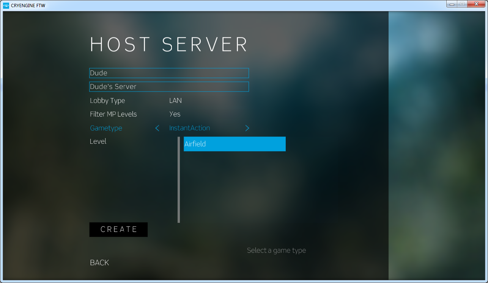

Overview
Throughout the CRYENGINE documentation articles, you may find references to "Pure Game Mode". This refers to running the game from the Launcher application, as opposed to running the game from within Sandbox.
When the game is shipped, players will use the Launcher and hence, the "pure game mode" to play. It can be found in both Bin32 and Bin64 directories, inside the main SDK folder.
By default, the file is called GameSDK.exe but you're able to rename this to whatever you like to suit your game.
You can also set the title of the Launcher window by using the following variable in the system.cfg file: sys_game_name=YOURTITLEHERE
Startup
When you run the Launcher you will be greeted with a screen that looks like the following:

This is the sample main menu shipped with the SDK which gives you a number of options to adjust. If you'd like to create your own custom menu, we leave it up to you, the developer, to create a menu for your game.
Loading a level
To load a level click on either Singleplayer or Multiplayer, depending on which game mode you wish to play.

Hosting/Joining Multiplayer
You can also Host or Join a multiplayer game via the Multiplayer menu.

Handy CVars
map i_reload log_Verbosity r_DisplayInfo r_VSync r_Width r_Height sys_spec s_SoundEnable t_Scale quit
Load a map
Reloads item scripts.
DUMPTODISK
defines the verbosity level for log messages written to console
-1=suppress all logs (including eAlways)
0=suppress all logs(except eAlways)
1=additional errors
2=additional warnings
3=additional messages
4=additional comments
DUMPTODISK, RESTRICTEDMODE
Toggles debugging information display.
Usage: r_DisplayInfo [0=off/1=show/2=enhanced]
DUMPTODISK, RESTRICTEDMODE
Toggles vertical sync.
0: Disabled
1: Enabled
2: Enabled, use asynchronous swaps on X360
DUMPTODISK
Sets the display width, in pixels. Default is 1024.
Usage: r_Width [800/1024/..]
DUMPTODISK
Sets the display height, in pixels. Default is 768.
Usage: r_Height [600/768/..]
Tells the system cfg spec. (0=custom, 1=low, 2=med, 3=high, 4=very high, 5=XBox360, 6=Playstation3)
DUMPTODISK
Toggles sound on and off.
Usage: s_SoundEnable [0/1]
Default is 1 (on). Set to 0 to disable sound.
Game time scaled by this - for variable slow motion
RESTRICTEDMODE
Quits the game